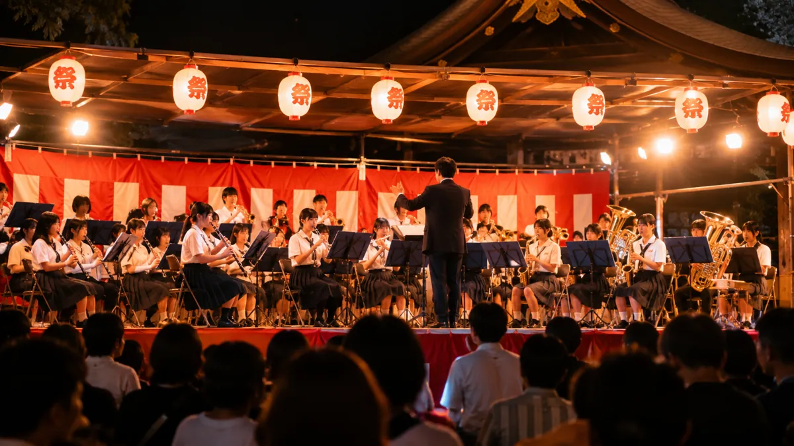

第12回
商店街から神社まで、手づくりの灯籠1,200個が並ぶ二日間。浴衣で夜店をめぐって、夏の夜の散歩をどうぞ。
16:00 – 21:30
みどり町商店街 ／ 緑ヶ丘神社
OUTLINE
HIGHLIGHT
商店街から神社の参道まで約400m。地元の小学生やお店の人が絵を描いた灯籠が、足元を照らします。
たこ焼き、やきそば、かき氷など、商店街のお店を中心に約30店が出店。小麦舎の冷たい焼き菓子も並びます。

和太鼓、地元の高校の吹奏楽部、アコースティックライブ。最後は全員で灯籠に火を入れる「あかり点灯式」。
TIME TABLE
ACCESS
交通規制のお知らせ：両日とも 15:00〜22:00 は商店街が歩行者天国になり、車は通れません。
NOTICE
VOLUNTEER
夏あかり祭は、地元のボランティアの手で作っています。1日だけ、数時間だけの参加も大歓迎。高校生以上なら誰でも参加できます。
お名前を入力してください
メールアドレスの形が正しくありません
どちらか1日以上を選んでください
これはポートフォリオ用のサンプルなので、実際には送信されていません。本物のサイトなら「当日の集合場所をメールで送ります」などの案内を出します。